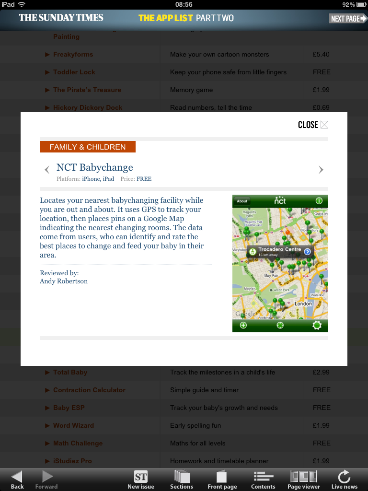

NCT Babychange in 500 Best Apps
The award-winning NCT Babychanging App that I built for the National Childbirth Trust has now had a new honour bestowed upon it. Two weekends ago it was selected for the Sunday Times App List, which selects and categories the 500 best Apps in the App Store. I didn’t get a copy of the print version, so here is a screenshot from the Sunday Times iPad App.
